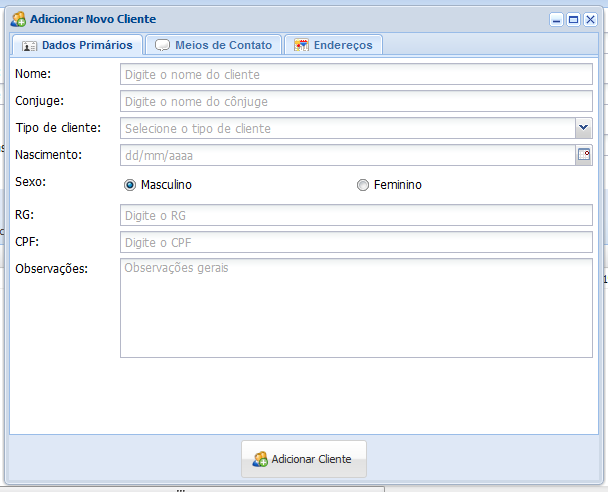

1. Clique no botão Adicionar para adicionar o novo cliente
2. Abrirá uma nova janela, já na aba Dados Primários

Altere os campos com as informações do cliente Nome, Cônjuge, Tipo de cliente, Nascimento, Sexo, RG, CPF, Observações e clique na aba seguinte Meios de comunicação para continuar o cadastro.
3. Na aba Meios de comunicação é possível cadastrar diversos meios de comunicação do cliente
Altere os campos com as informações do cliente Tipo de Contato, Contato, Descrição e clique no botão Adicionar meio de contato para incluir, em caso de erro no preenchimento das informações clique no botão Limpar. Clique na aba seguinte Endereços para continuar o cadastro.
4. Na aba Endereços é possível cadastra o endereço completo do cliente
Altere os campos com as informações do cliente de País, Estado, Cidade, Bairro, Logradouro, Número, Complemento (caso tenha), Ponto de Ref. e clique no botão Adicionar endereço para incluir, em caso de erro no preenchimento das informações clique no botão Limpar.
5. Clique no botão Adicionar Cliente para adicionar o novo cliente